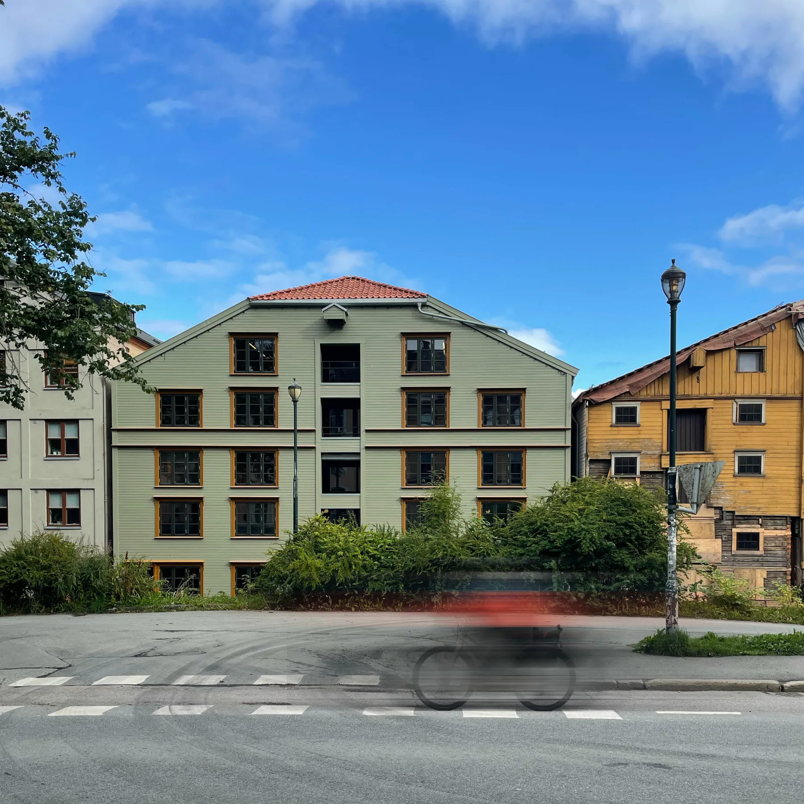

Kjøpmannsgata 15
02Transformasjon, restaurering og rehabilitering av bryggehus
Antikvarisk · Ombruk · transformasjon · Næring · kontor · InteriørSe bildegalleri

- Byggherre
- Thon Eiendom
- Byggeår
- 2019-2025
- Medarbeidere
- Iver Blomsøy, Nicolai Birkeland, Heidi Hynne
Om prosjektet
Bryggehuset fra 1857 har fått nye kontorlokaler med historiske trekonstruksjoner som utgangspunkt. Restaurering, nye lysåpninger og nøye tilpassede tekniske løsninger gjør bygningsarven brukbar for en ny tid.
Bilder & tegninger14 bilder


La oss begynne med en samtale